Transparent Electron overlay
Frameless, transparent, and always on top. It sits on the desktop without pretending to be a heavy dashboard.
v0.7.0 • local first • WSL2 + Windows
A transparent Electron overlay, Python WebSocket bridge, and real sprite packs that keep Hermes visible on your screen. No cloud hops, no telemetry, no nonsense.
HERMES_PET_HOME env variable for directory isolation.
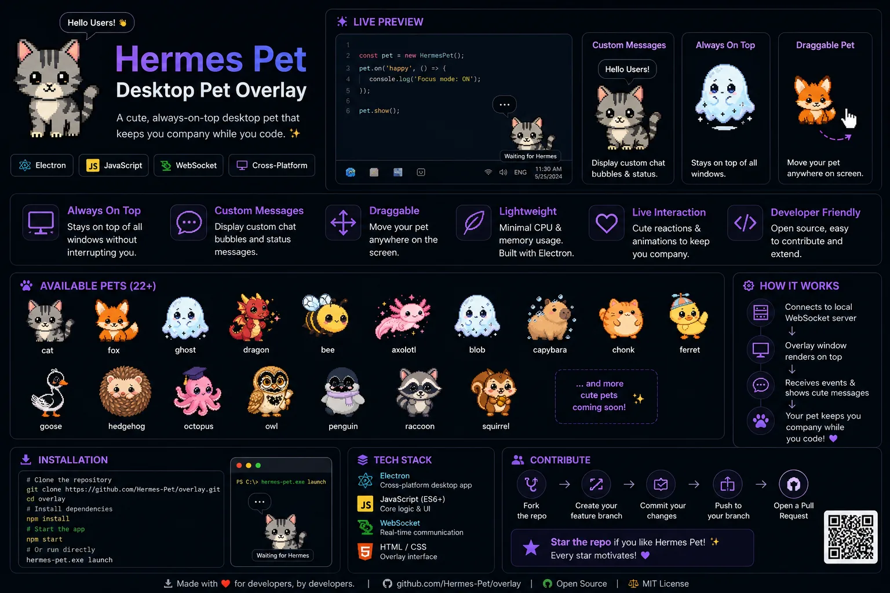
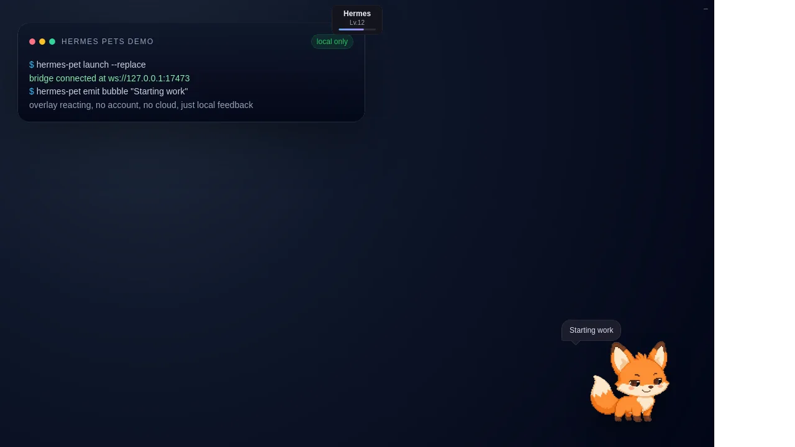
The pet reacts right on the desktop when Hermes emits a message.
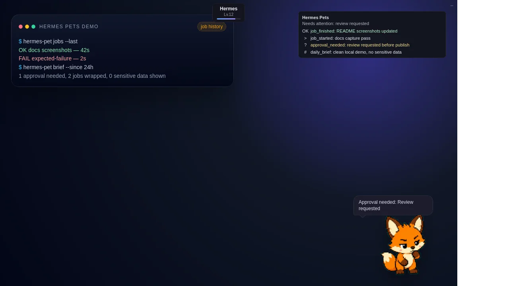
Attention needed, job finished, and brief summaries stay visible.
What it does
The overlay is transparent, always-on-top, draggable, and fed by a local WebSocket bridge. Sprite manifests define frame counts, frame rates, looping, and fallback behavior, so idle, hover, drag, run, review, jump, fail, and bubble states stay deterministic.
Frameless, transparent, and always on top. It sits on the desktop without pretending to be a heavy dashboard.
The overlay listens to a local bridge and reconnects cleanly when the socket blips. No cloud hop required.
Sprite packs declare FPS, loop behavior, and fallback rules for idle, drag, hover, and message reactions.
Packages live under ${HERMES_PET_HOME:-~/.hermes_pet}/custom-pets/<pet-name>/ and are validated before use.
update --check and --dry-run let you preview files and steps before anything mutates on the disk.
doctor, overlay-status, and the localhost console keep the operator execution loop honest.
Reality check
No hosted galleries. No telemetry reporting. No cloud accounts. WSL2 on Windows remains the stable production path, while native Windows is available as an unsigned beta installer and native Linux/macOS remain future investigation targets.
Pet directories live under ~/.hermes_pet by default, with support for HERMES_PET_HOME redirection.
The operator dashboard binds strictly to localhost only and requires a unique token. It is not exposed to the web.
The supported public install flow in the repository is directly GitHub-based, not a PyPI or pre-compiled installer.
Pet showcase
The repository ships with built-in overlay species and curated custom packages. These previews use actual assets from the repository, including sprite frames and contact sheets.
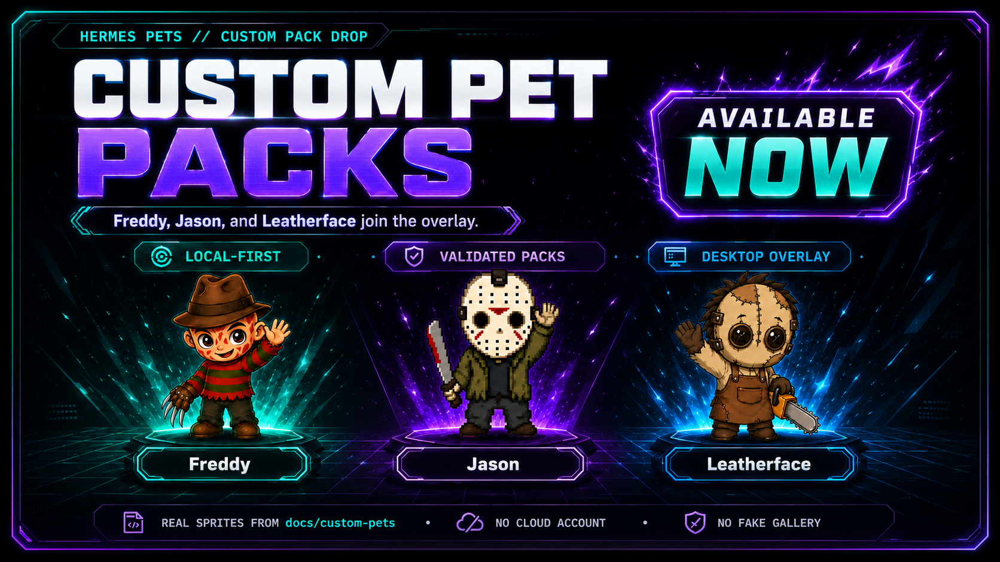
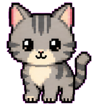
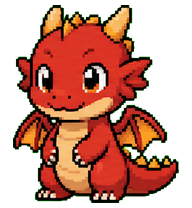
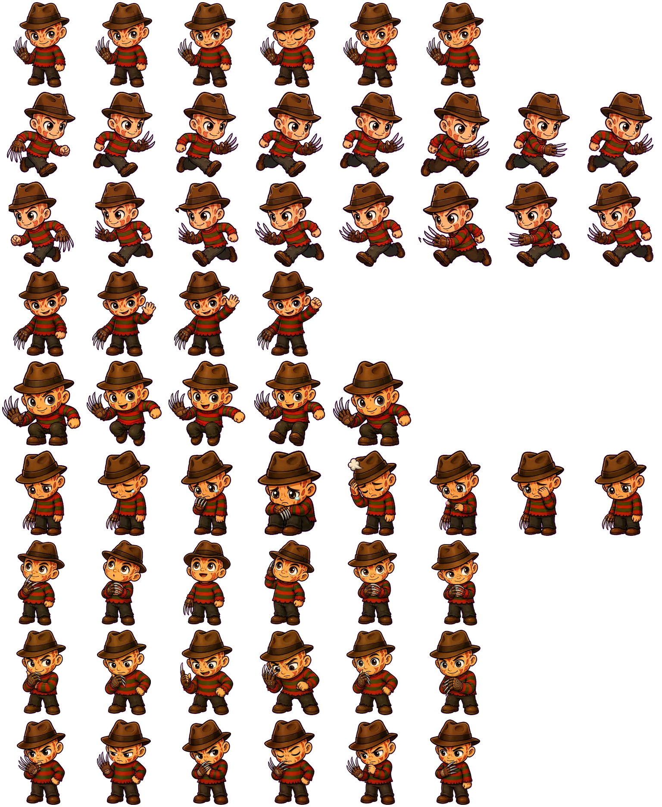
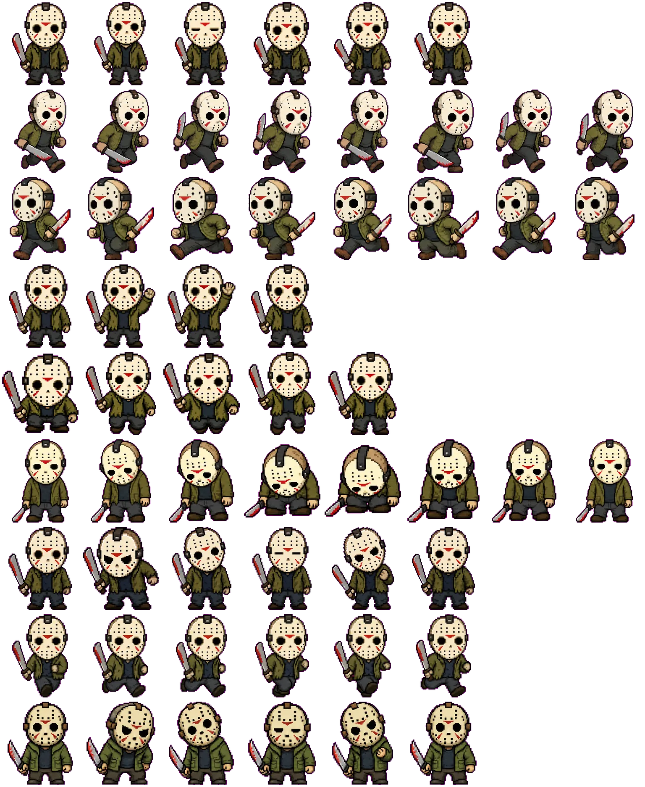
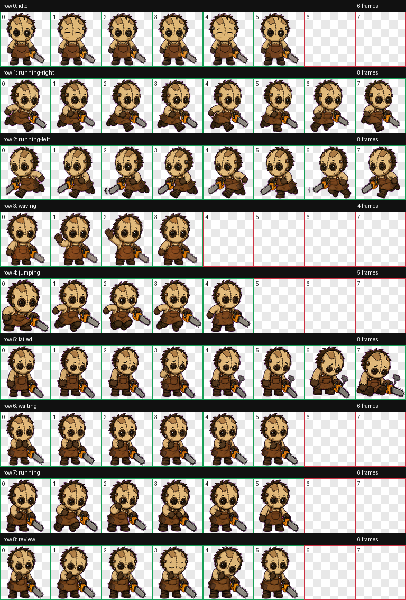
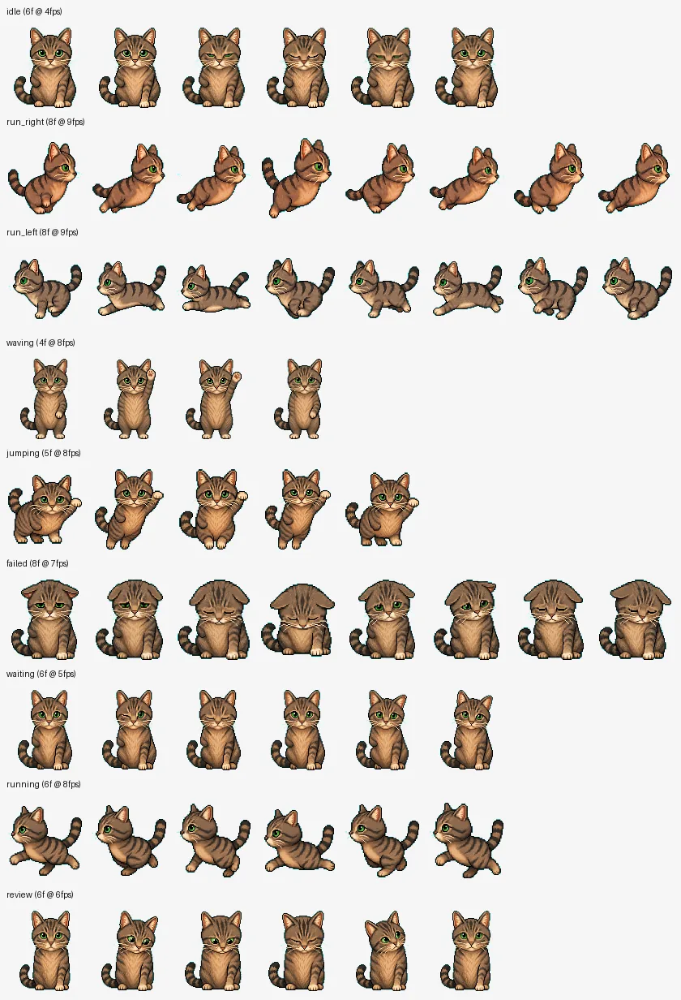
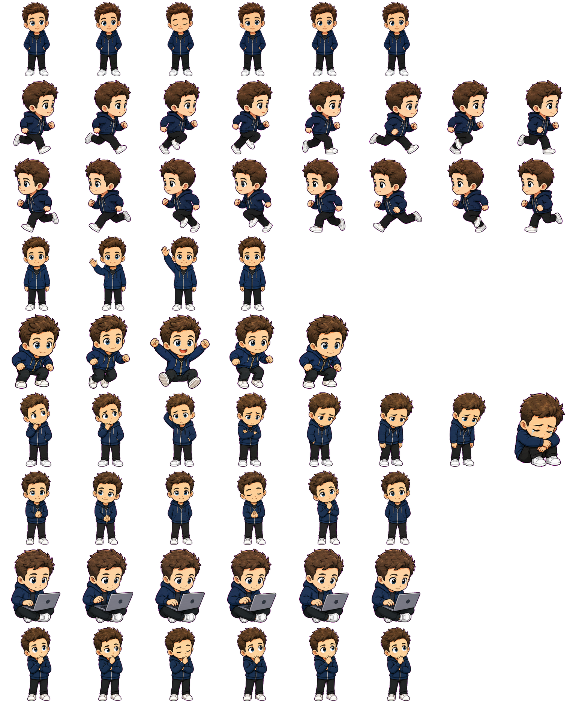
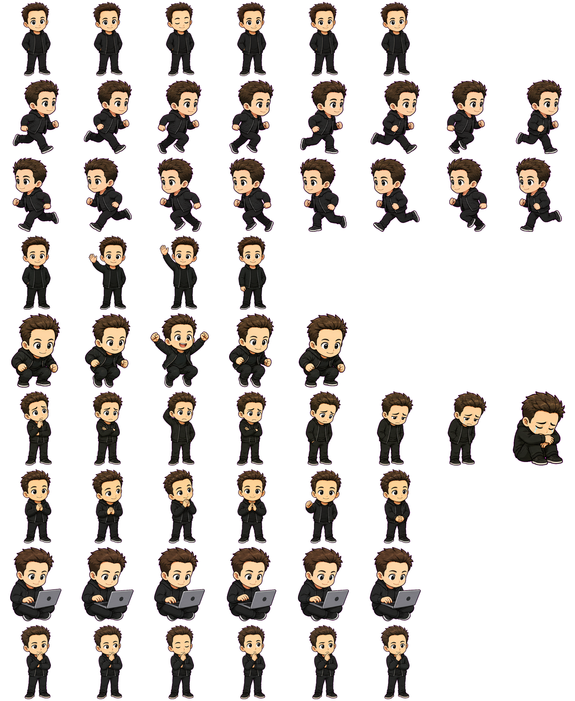
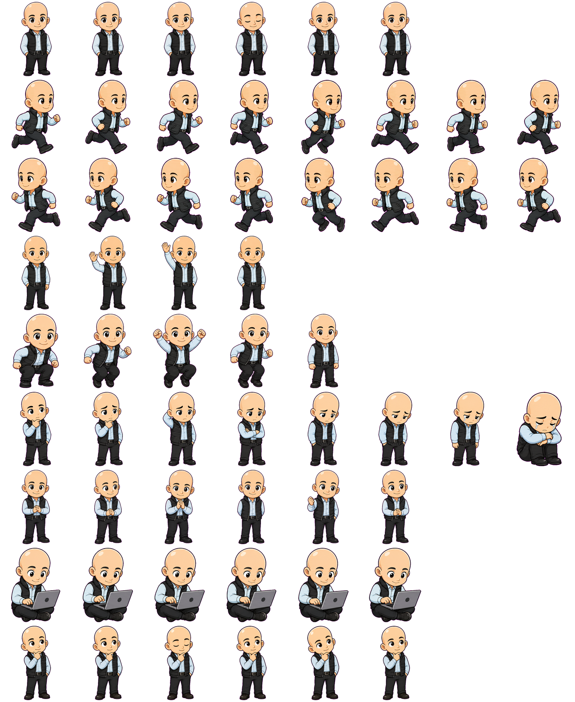
Operator install and use
The repository supports local editable installs, a direct GitHub install path, the launch bridge, and the custom pet validation command.
python3 -m pip install 'git+https://github.com/asimons81/hermes-pets.git'
hermes-pet launch
hermes-pet doctorThe default github-linked install flow, overlay launching, and healthcheck utilities for local operators.
The companion overlay is stateful: if the socket connection is active, launch hooks into the current process cleanly.
cd <repo-directory>
pip install -e .
hermes-pet custom-pet validate docs/custom-pets/freddy
hermes-pet update --checkEditable developer installations, testing sprite validation configurations, and performing guarded updates.
Allows operators to dry-run updates, verifying what changes will be applied before any directory mutations.
Release and status strip
No vaporware or mock screenshots. The local changelog tracks the step-by-step evolution of the overlay features.
Unsigned beta native Windows installer with bundled Hermes Pets desktop app, CLI, bridge, overlay assets, and release verification.
Curated custom pet gallery expansion.
First repository-backed curated custom pet gallery.
Export operator recap flow logs.
Codex-driven pet pack import validation and activation.
Guarded update logic and check parameters.
Token-protected websocket localhost console dashboard.